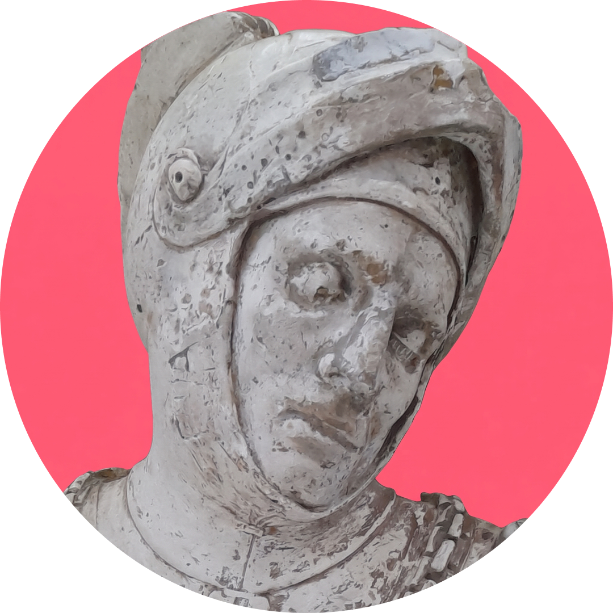

Guidarello Guidarelli fue un soldado italiano nacido a mediados del siglo XV en Rávena, Italia.
En 1499 luchó como condottiero junto a César Borgia, actuando como espía para la República veneciana.
El encargado de esculpir la estatua yacente del caballero fue Tullio Lombardo. Este escultor, famoso por la belleza de los rostros de sus monumentos funerarios, decidió retratar al condottiero cuando tenía aproximadamente 33 años.
En el siglo XVIII comenzó a esparcirse por el mundo una leyenda entorno a esta bella escultura: si una mujer soltera besaba los labios del caballero Guidarelli, se casaría con un hombre maravilloso antes de un año. Si la mujer era casada, tendría un hijo tan apuesto como el soldado.
Se calcula que Guidarello fue besado por más de 5 millones de mujeres de todo el mundo. Este es el motivo del leve tinte rojizo o carmín que se fue depositando sobre sus labios.
Animáte a interactuar con el caballero para ver qué consejo amoroso te puede llegar, dejá y descubrí besos a través del tiempo.
